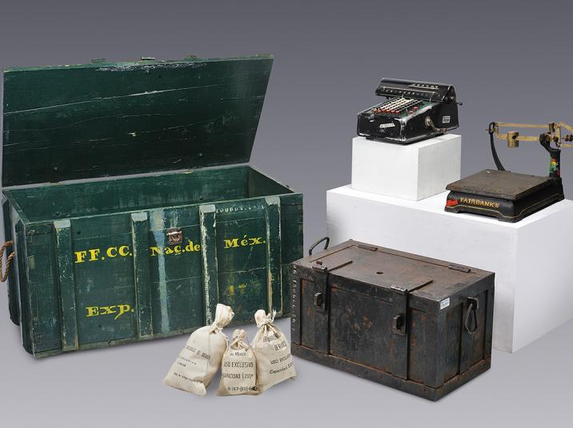
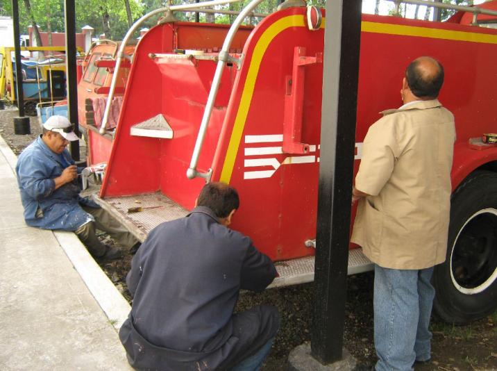

Colecciones
Conservación

El Centro Nacional para la Preservación del Patrimonio Cultural Ferrocarrilero resguarda grandes colecciones de documentos y bienes muebles históricos, todos ellos tesoros de la cultura ferroviaria en México.
En el Centro de Documentación e Investigación Ferroviarias (CEDIF) se concentran las colecciones documentales: 86 mil imágenes y negativos en la Fototeca; una Biblioteca Especializada de 45 mil ejemplares, la tercera parte de ellos únicos; 214 mil planos en la Planoteca y un Archivo Histórico que sobrepasa los 2 mil 500 metros lineales.
Entre los Bienes Muebles Históricos se encuentran 90 unidades de equipo rodante histórico: locomotoras de vapor, coches de pasajeros, equipo de trabajo o de carga; además de una diversidad de colecciones que supera las 20 mil piezas que tienen algún vínculo con los trenes, como herramienta y maquinaria ferroviaria, equipos de telegrafía, indumentaria e inclusive muebles propios de las estaciones del ferrocarril.
Restauración
La Subdirección de Conservación y Restauración tiene dos grandes tareas: mantener seguros e íntegros los bienes muebles, equipo rodante y documentos, evitando lo más posible su deterioro, así como intervenirlos si les falta algún elemento o presentan daños mayores. En este sentido, las principales actividades del área son: evaluar el estado en que se encuentran las colecciones, aplicar tratamientos a los bienes y equipos para estabilizarlos o restaurarlos, elaborar fichas de registro de las características de cada pieza y monitorear el estado físico de las exposiciones temporales del Museo antes, durante y después de su montaje.
El área de Conservación y Restauración cuenta con un laboratorio de análisis químicos y un equipo de trabajo altamente especializado en el análisis e intervención de piezas de muy distintos materiales, como metal, papel, tela y madera, sólo por mencionar algunos. Lo anterior ha hecho de esta área un centro reconocido en el ámbito nacional que, adicionalmente, asesora a otras instituciones en la conservación del patrimonio mueble ferroviario.